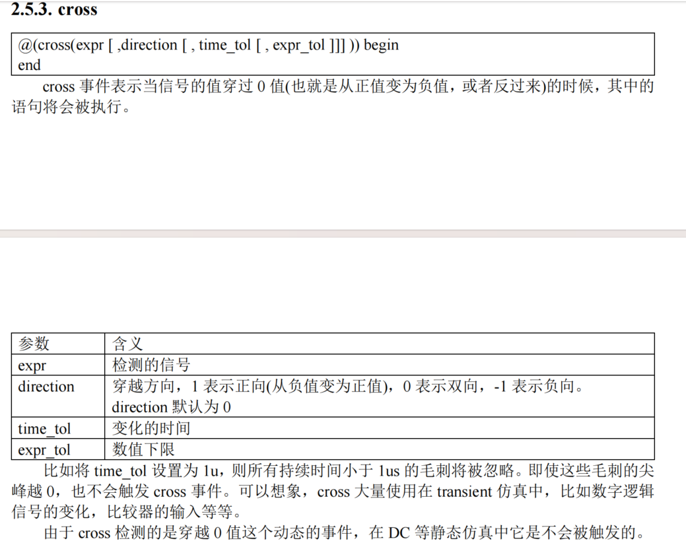
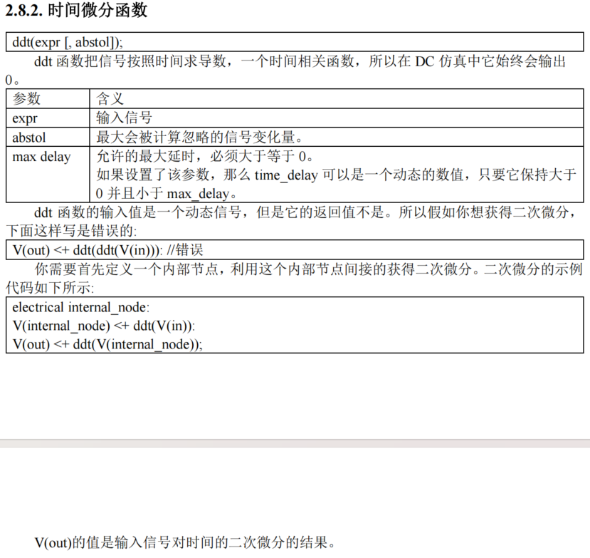
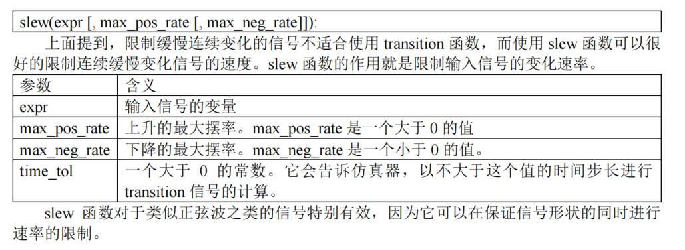
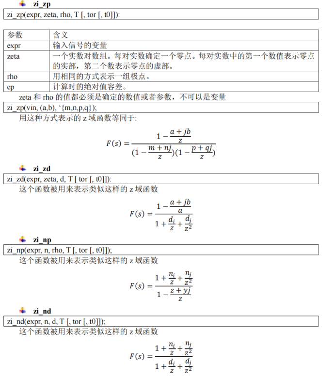

→包含头文件
`include “constants.h”
`include “disciplines.h”
· 第一个文件是 constants.vams。这个文件内部定义了很多常用的数值。比如：define M_PI
3.14159265358979323846。有了这样的定义，我们可以在自己的代码里任何地方直接使用 M_PI
作为。
· 第二个是 disciplines.vams。单词 discipline 本身是约束的意思。看这个文件内部，包含有
一大堆的 nature、potential、flow 等等的定义。
→模拟过程
· 使用analog begin …… end
→赋值操作(=与<+)
· 等号(=)在 Verilog-A 中用作为数值赋值，也就是说等号左侧的变量要么是 integer 要么是 real。而(<+)符号用于对 electrical 量的赋值，也就是类似V 和 I 的量。
· 其本质差别是，等号式子的计算是不需要 SPICE 进行迭代计算的。在每一步仿真中，等号
的式子是直接出结果的。而<+则并不是单纯的赋值，它代表的是一个需要 SPICE 仿真器进行
迭代计算的方程。所以，等号基本上可以用在所有位置，而<+必须被包含在 analog begin 语句
中。
→★变量
①整数：integer
②实数：real
③代码generator使用：genvar
④字符串：reg与输出（调试用）
⑤参数：parameter
★⑥网线与节点：electrical
模块需要内部节点的时候就使用 electrical 语句。内部节点的使用和模块端口类似，你可以
检测其电压电流值，也可以对其赋值。它包含了电压量与电流量。
⑦地：ground
→★模拟事件
①仿真开始事件：initial_step
②仿真终止事件：final_step
③信号穿越0事件：cross

④信号大于某值检测：above
⑤定时器：timer
⑥信号波动(绝对值)：absdelta
→★函数
一.基础函数
二.模拟量计算函数
①有限指数函数：limexp
②时间微分函数：ddt

③时间积分函数：idt
④循环积分函数：idtmod（积分到某个值重新来过）
⑤信号微分函数（A对B求导）：ddx
⑥信号延时函数：absdelay

⑦瞬态函数（减缓信号变化，滤波器）：transition
⑧限制信号摆率：slew

⑨
⑩

三.仿真器函数
1.不连续点(防止仿真器不收敛)
2.仿真状态函数(第几秒/温度等)
3.获得非本模块中网表节点
4.
5.噪声源：（白噪声/闪烁噪声）
6.随机数
★7.打印信息
8.终止仿真
★四.自定义函数
→数模混合仿真
· 一个模块内部可以包含多个always 语句块，但是在一个模块内只能使用一个 analog 语句块。